debuff and two players will receive a
debuff and two players will receive a
 debuff, denoting the order they will explode with spread AOEs later. Don't worry about this one for now.
debuff, denoting the order they will explode with spread AOEs later. Don't worry about this one for now.Another Sil'dihn Subterrane is a high-end duty added in patch 6.25. The fight can be unlocked by speaking to Osmon in Old Sharlayan (11.9, 13.3) after completing The Sil'dihn Subterrane.
The minimum ilvl required to enter this fight is 610.
Silkie will spawn three puffs in a triangle pattern. She then will cast Bracing Suds followed by Squeaky Clean. Squeaky Clean will do two 90 degree cleaves followed by a 225 degree cleave. The side that Silkie starts on will be the safe side for the 225 degree cleave.
She follows up with Chilling Suds into Slippery Soap. There should be two green puffs on the field. Players should aim the line stack through one of the green puffs depending on the color and position of the non-green puff. The goal is to leave only one green puff on the field, as players would not be able to resolve two green puffs (two donut AOEs) without being damaged. You should be aiming towards the green puff that would be hit by the non-green puff. Remember to keep moving to avoid being frozen, then dodge intercardinal relative to Silkie to avoid the cardinal line AOEs.
In the below example, a yellow puff is SW and green puffs are on North and SE. The yellow puff would hit the North puff. Changing the North puff to blue leaves the SE puff as the only green puff, and players would be able to stand SE and avoid all puff attacks.
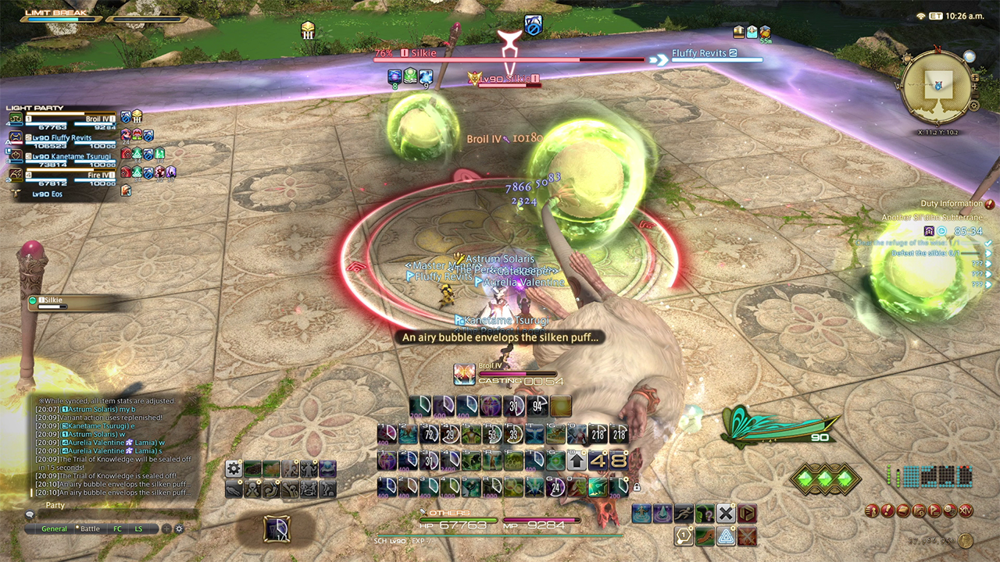 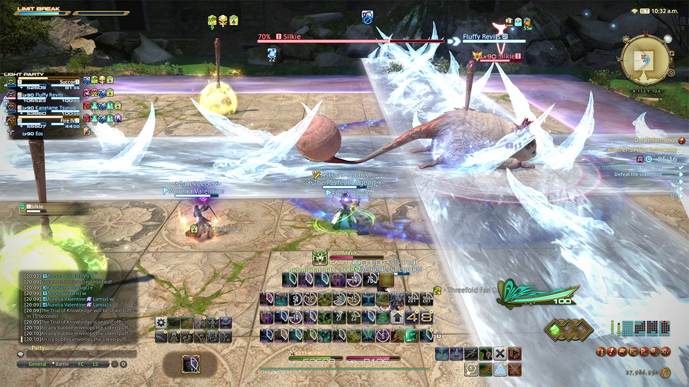 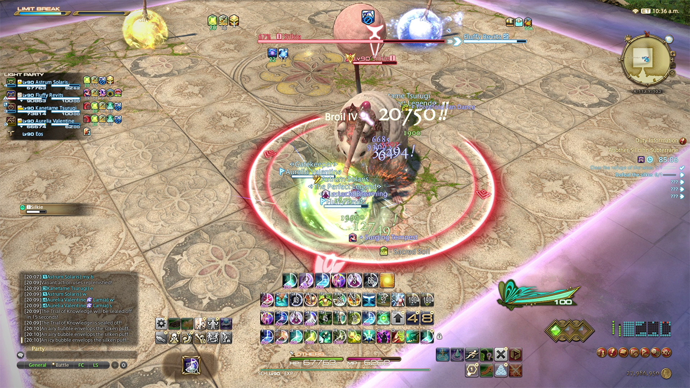 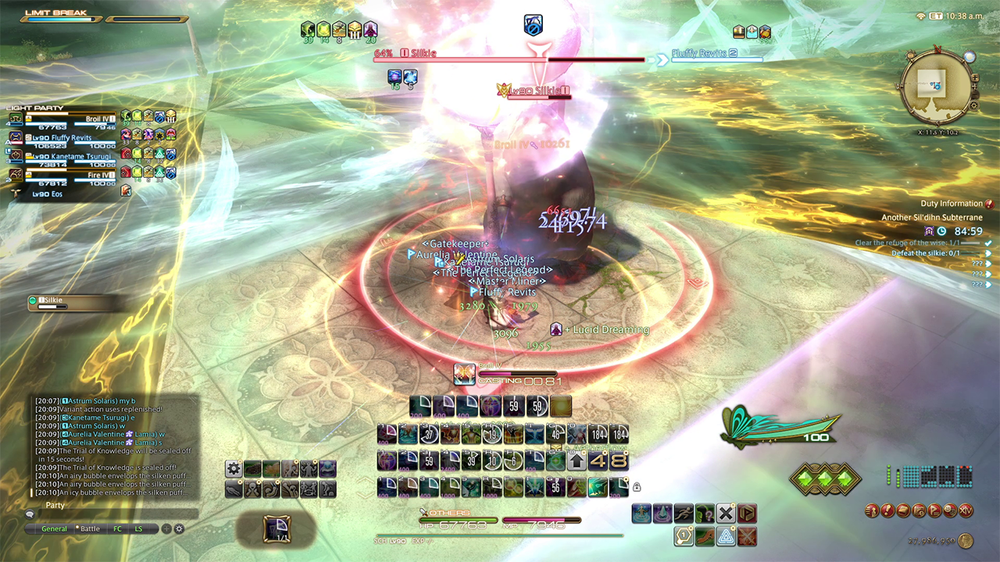Silkie will cast either Bracing Suds or Chilling Suds, then cast Fresh Puff and spawn four puffs. The puffs will either be on all cardinals or all intercardinals, and there will be two blue puffs and two yellow puffs. Same-color puffs are always opposite to each other. Each puff will tether to each player and jump towards them after a few seconds. Depending on whether Silkie uses Bracing Suds or Chilling Suds, players will want to drag puffs to leave the center safe or leave a corner safe.
There are several ways to resolve this mechanic. The patterns and pictures below are one of many ways to make a safe spot.
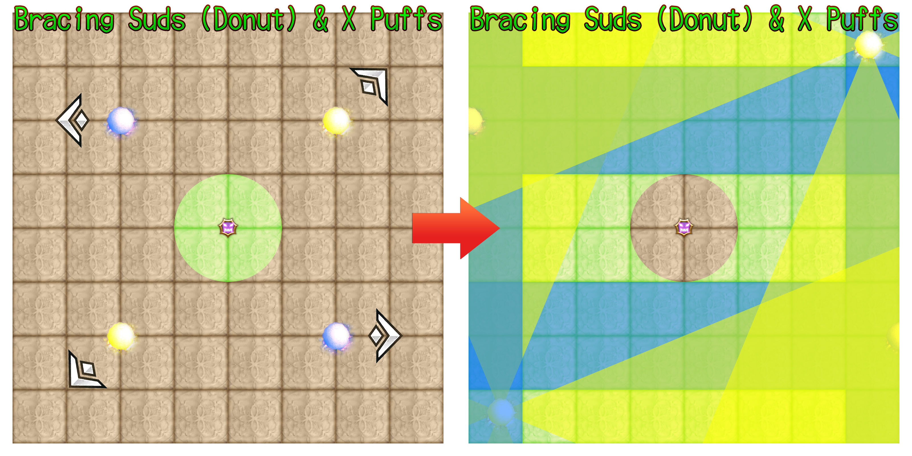 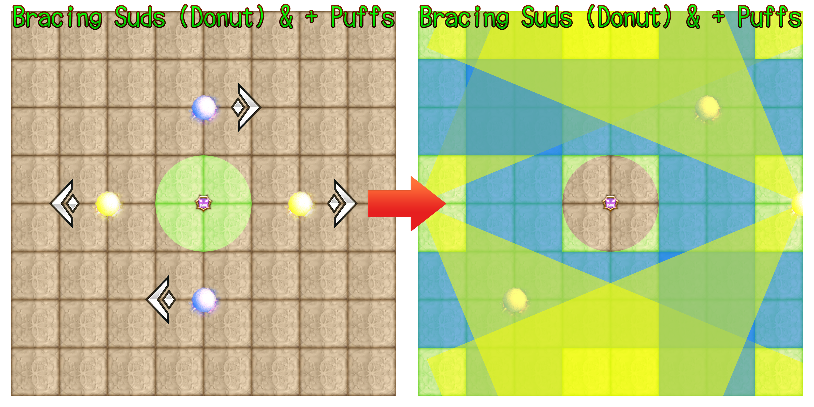 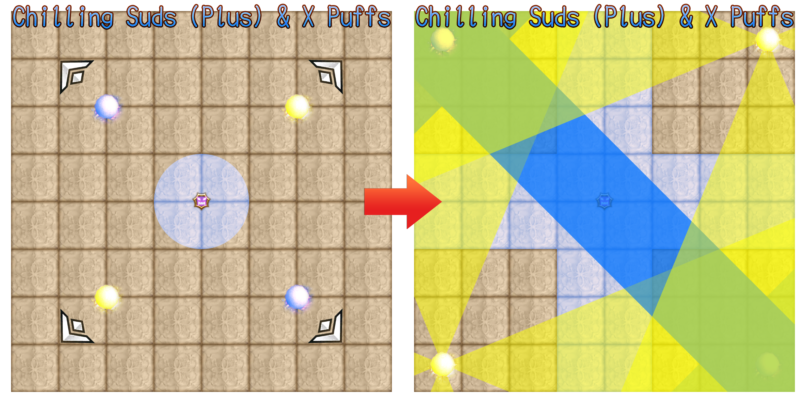 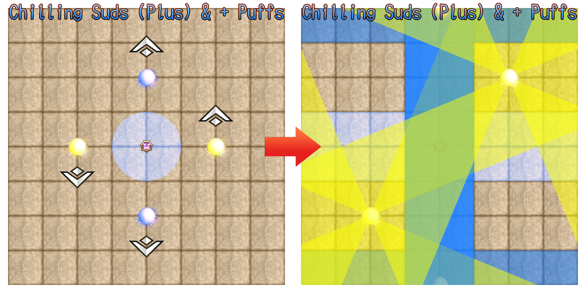After this, Silkie will use one of Bracing Suds / Chilling Suds / Fizzling Suds combined with Slippery Soap. Be ready to ride the knockback, keep moving, or dodge after the stack depending on which sud she uses.
Silkie will spawn eight puffs in a 4x2 pattern. She will follow up with Eastern Ewers, which will clean off six puffs. Take note of the colors of the remaining two and dodge accordingly.
Next, Silkie will use Chilling Suds and do a Carpet Beater. The tank should stand East or West in order to position Silkie inline with the remaining six puffs. Silkie will do a Slippery Soap line stack targeting the healer. They should position at the opposite end of the field so that Silkie dashes through all the puffs.
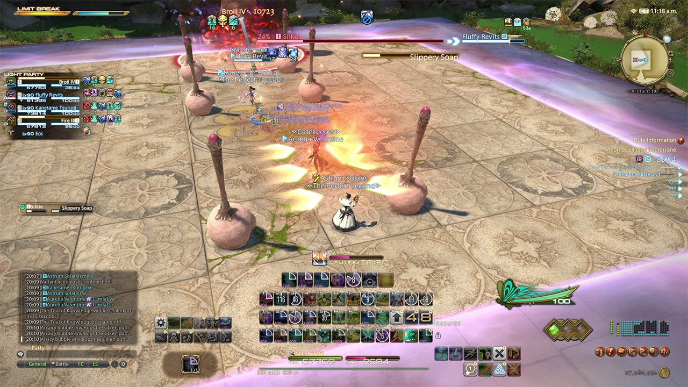The tank should drag Silkie in the empty column in order to avoid the upcoming cardinal line AOEs coming from the remaining puffs. Silkie will use Bracing Suds and lock in her position, so be sure to move her into the safe spot before that happens. She will use Soaping Spree and detonate all puffs. Stand inside of her hitbox to avoid all of the line AOEs and the donut going off.
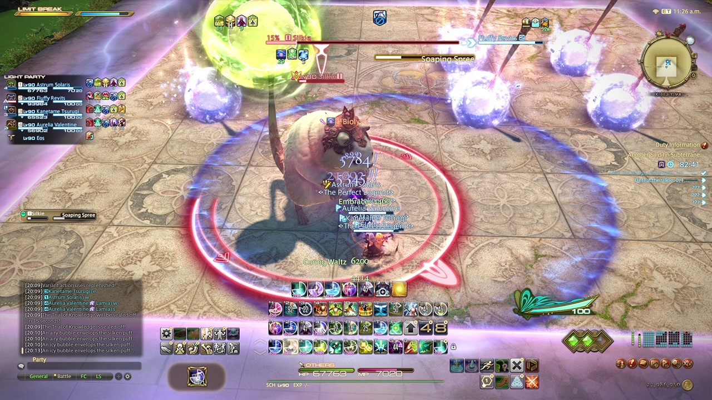 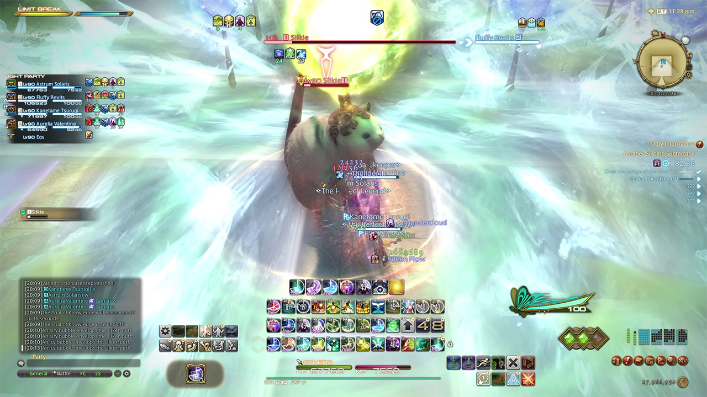This is the final set of new mechanics. Silkie will spawn four blue puffs in the South part of the field that tether to each player. Silkie will use Bracing Suds followed by Squeaky Clean. Players need to drag the puffs away from the incoming 225 degree cleave, as this will create multiple green puffs that overlap donut AOEs with no safe spot. The uptime strat is to stand on Silkie's hitbox and be ready to move left or right, whichever side Silkie lands on first. Players will be able to pull the puffs away from the unsafe side will maintaining uptime.
After this, Silkie will do two sets of Bracing Suds / Chilling Suds / Fizzling Suds with Slippery Soap, followed by a Total Wash serving as enrage.
The Gladiator will spawn two clones at corners of the field and notches will appear on the field. They will pulse one to three times, with the number of pulses being how many notches they will dash. After a delay, they will dash forward and do a 180 degree cleave in front of them, then behind them. Players should stack inside where the notches will intersect (relative to the center of the field) to dodge the first cleave, then move out to dodge the second cleave. The Gladiator will do this move twice.
Afterwards, the Gladiator will do a line stack where the first person in line takes extra damage, with a tankbuster afterwards.
The Gladiator will assign all four players the Echo of the Fallen debuff, which will do a spread AOE when the timer expires. One player will also have Lingering Echoes, which will do a sustained AOE when it expires. One other player will also have Thunderous Echo, which is a stack AOE. A strategy that works is to have your healer put shields on the player with the stack and just ignore that debuff.
Before the timers go off, the Gladiator will cast Ring of Might, which functions similarly to the previous Specter of Might. The Gladiator will pulse one to three times, which corresponds to how far their attack will go. It will do an AOE into a donut. Players should spread out and be ready to move in while staying apart from one another.
The Gladiator will spawn several heads that fire gold or silver lasers. If you divide the field into squares based on how big the incoming line AOEs are, each quadrant of the field is 4x4 large. The head lasers are 2 squares wide. There will also be orange line AOEs that fire in a cross pattern that are one square wide. There will also be a spread AOE at the end. Players should spread one per quadrant and dodge the orange line AOEs in the safe 2x2 square that won't be hit by gold and silver lasers.
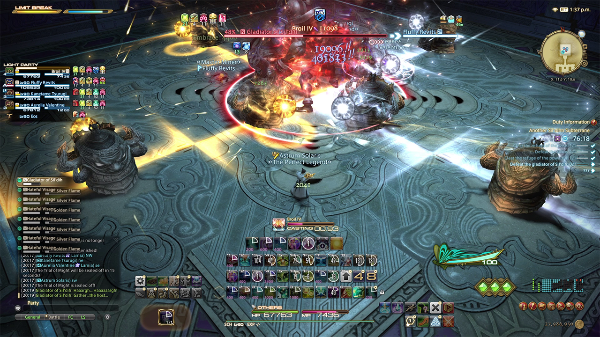 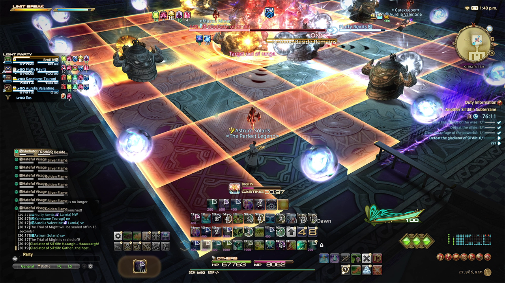 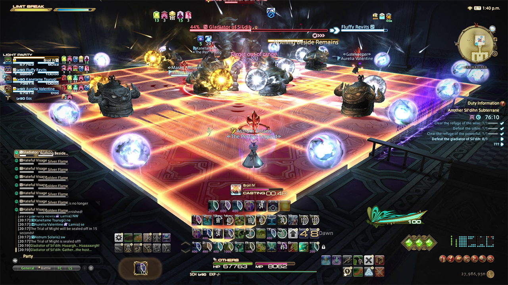 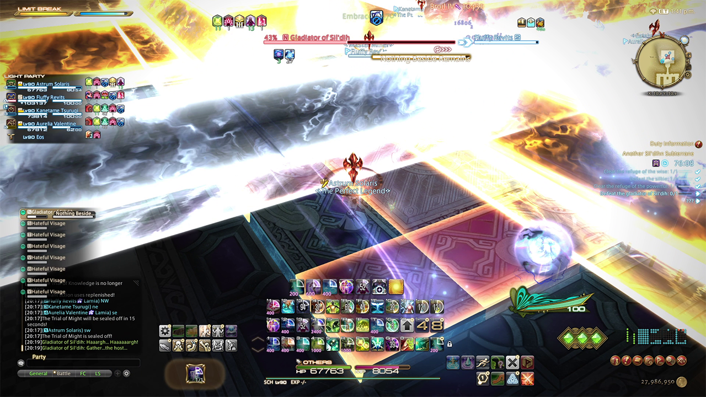The Gladiator will do the same move again, but this time with debuffs. One player will have 2 stacks of 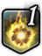, another player will have 2 stacks of 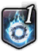, and two players will have 1 stack each of and . The debuff functions like a temperature gauge from previous dungeons. Players need to get hit by lasers of the opposite color in order to cleanse their debuff. If they do not cleanse their debuff when it expires, they will die. So, the player with 2 stacks of should be hit by two silver lasers, the player with 2 stacks of should be hit by two gold lasers, and the players with one each of and should be hit by one laser of each color. Each player should go to one quadrant and be in line with the lasers. Make sure to dodge orange line AOEs and spread out while doing so.
This is the last unique mechanic. Two players will receive a debuff and two players will receive a
debuff, denoting the order they will explode with spread AOEs later. Don't worry about this one for now.
Supports will be tethered together and DPS will be tethered together. Players should split to stretch their tether and break it. There will be circle AOEs that spread out around the field, leaving one safe spot in a North corner and one safe spot in a South corner. Have the tank and melee DPS go to the North corner and the healer and ranged DPS go to the South corner. Be ready to dodge the spreading circle AOEs.
After this, two towers will appear. The players with the should take the towers, and the
players should spread out to explode without clipping other people. Then, two more towers will spawn. The players should swap so that the
players who detonated should take the towers, and the players
should spread out to detonate.
The Gladiator will follow up with another two Specter of Might attacks, a stack, raidwides, then enrage.
The boss will spawn two sets of fire arrows that will teleport to the empty circle in front of it and explode with an AOE attack when detonated. The tank and melee DPS should go North and the healer and ranged DPS should go South. The fire arrows will start spinning, which will rotate where they teleport by 90 degrees. The safe spot will vary depending on where the fire arrows are and which direction they are spinning. In addition to this, the boss will cast Firesteel Strike and jump on two random players. Each player in a pair has to be spread out inside of their safe corner to not get clipped by the jump, which will send them into the wall if hit.
Here are some helpful visuals created by @ramcolor_saori on Twitter that showcase all the patterns and where you should stand. These patterns work regardless of if you're in the North group or the South group since it is relative to facing the center. If the colors are different, stand between them. If they are both orange, stand to the left of them. If they are both blue, stand to the right of them.
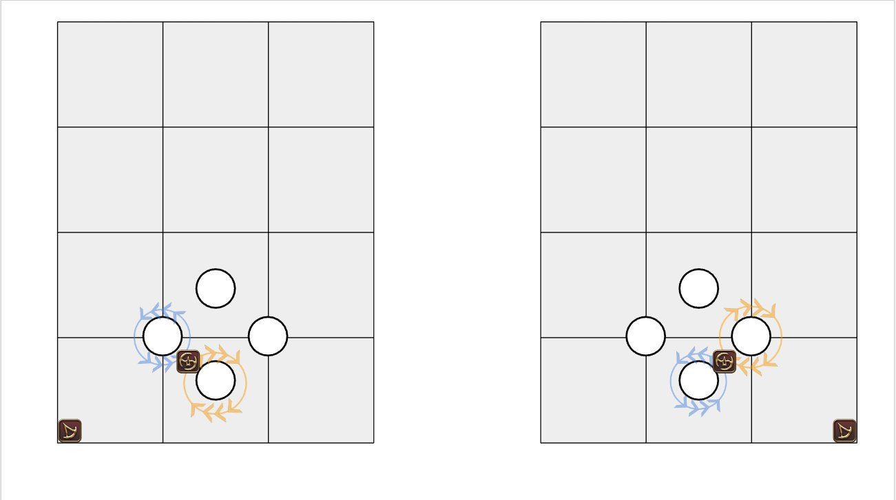 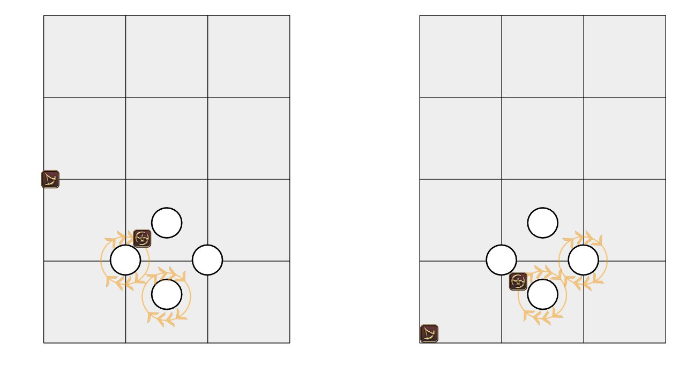 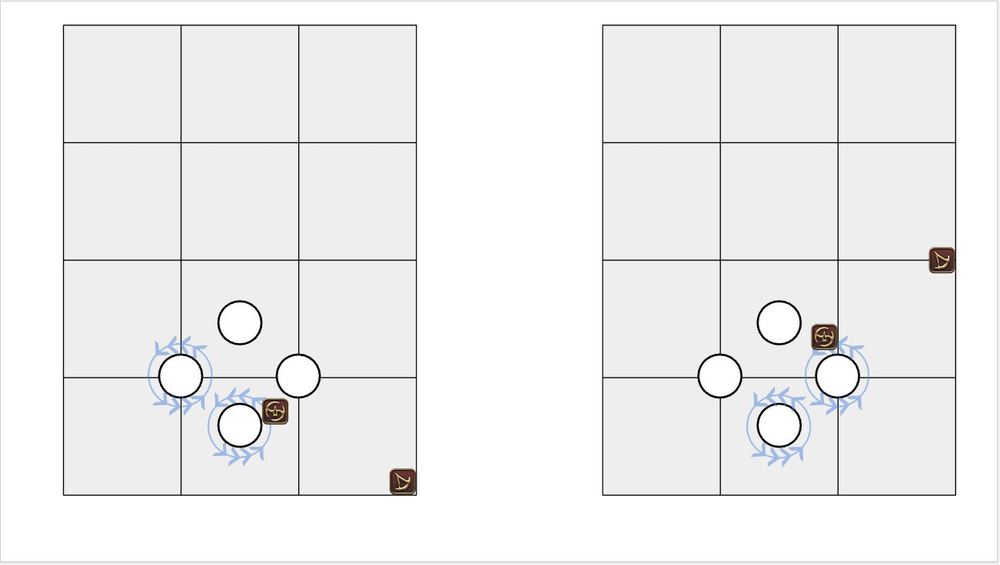The boss will spawn two sets of four lines (blue and orange), each with numbers of dots on them. Squares will spawn along one side of the field. He will also give everyone debuffs numbered one through four
 . Players with matching debuffs can touch their corresponding line in order to break it. Touching the wrong line or touching the correct one in the wrong order will cause the player to blow up. The team
needs to break tethers in the order of 1, 2, 3, 4. You'll also need to figure out if you want to break the blue lines first or the orange lines first. Start with lines that are perpendicular to the wall
with squares on it. The squares will do large line AOEs after some time, and you want to break the lines perpendicular to them so that the entire team can move out of the way of the AOEs.
. Players with matching debuffs can touch their corresponding line in order to break it. Touching the wrong line or touching the correct one in the wrong order will cause the player to blow up. The team
needs to break tethers in the order of 1, 2, 3, 4. You'll also need to figure out if you want to break the blue lines first or the orange lines first. Start with lines that are perpendicular to the wall
with squares on it. The squares will do large line AOEs after some time, and you want to break the lines perpendicular to them so that the entire team can move out of the way of the AOEs.
In the below example, the blue lines should be broken first to avoid upcoming square attacks.
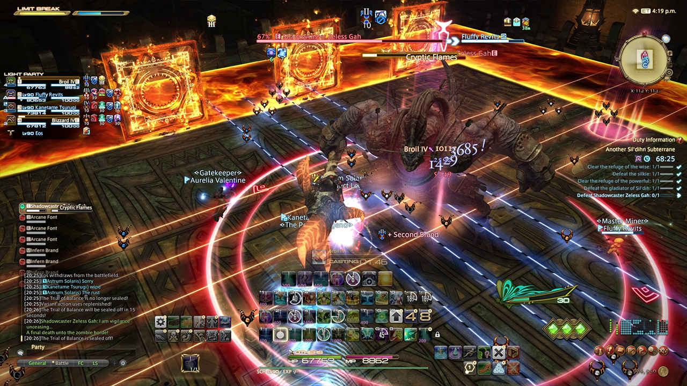You also have to think about which quadrants the party should go in (they will always be diagonal from each other). See the below image. To break the blue lines, the
player could go NW or SW. However, if they went SW, they would be unable to reach the orange
line later on, as the line is North and the player would be stuck South. The correct quadrants always have the same dots on both sides
of the quadrant. In this example, the NW corner has both and ,
and the SE corner has both and . Thus, the party should split into pairs
going NW and SE depending on what debuff the player has.
While you're breaking lines in order, the boss will use Cast Shadow, which does conal AOEs from the center of the field that gradually go off. Dodge the conals while breaking lines. When you finish with one set of lines, work on the other set. Note that touching a line inflicts Magic Vulnerability Up, so wait for it to fall off before touching more lines.
This mechanic has a lot going on, including spinning lights, rotating circles, teleports, and much more. Using the JP strat, you can simplify this mechanic a lot. If you're using the right markers, there will be red markers (A and 1) North and blue markers (C and 3) South. Two players will have a red spinning circle and two players will have a blue spinning circle. Simply go North or South to match the color of your spin. Everyone will also have a portal attached to them, which will teleport them a distance to their circle later on. Your destination will be rotated 90 degrees either clockwise or counterclockwise based on the color of your spin. In addition to this, players will get a debuff that forces them to take a teleport circle on the field in order to not die (unrelated to the one attached to you). If your teleport will end up pointing out, go out. If your teleport will end up pointing in, go in.
There will be two teleport circles at each end of the field. Ride the teleport circle that will rotate into the field, and go to the nearest colored marker afterwards (A or 1, or C or 3) to bait cleaves. You'll be forced to teleport. Go to the nearest colored marker again to bait the second set of conal cleaves.
The boss will spawn three squares that shoot line AOEs in the directions it is facing. They will teleport to a destination, but said destination will rotate 90 degrees. There will be four safe squares. Players should go in pairs and spread similar to the previous Cryptic Portal to take jump AOEs.
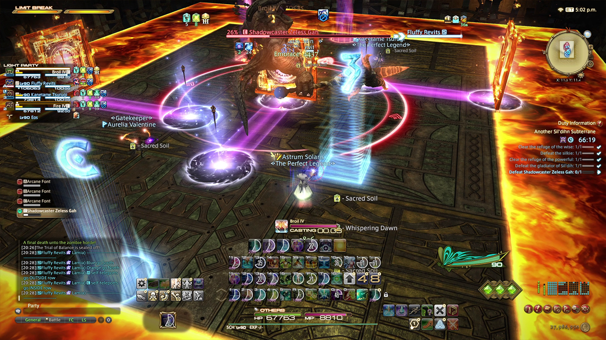 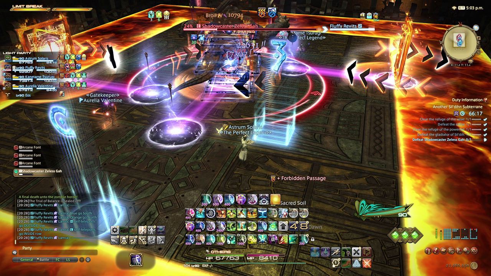If your DPS is good, you should be able to kill early in this mechanic. If you're confident in that, spread one person to each corner and DPS the boss down.
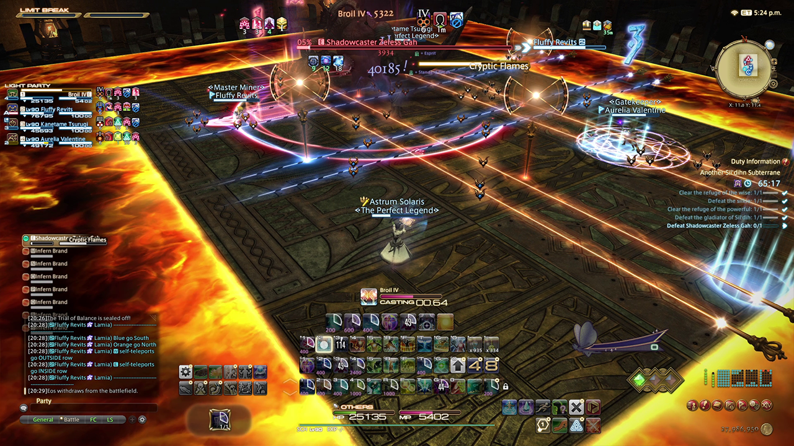If you have to resolve the mechanic, here is how it goes. Players need to break lines similar to the first Cryptic Flames. They will also need to bait two proximity cleaves from towers, similar to Banishment. Touching lines and baiting cleaves give Magic Vulnerability Up, so take time to wait for the debuff to fall off before touching more lines. While this is happening, the boss will use Pure Fire to drop baited AOEs on where people are standing. The boss will also use Cast Shadow to do delayed conal cleaves. The boss will follow up with a tankbuster, a raidwide, then enrage.
If you take him down, congrats! You'll have gained 4 silver coins, which you can redeem at Old Sharlayan.